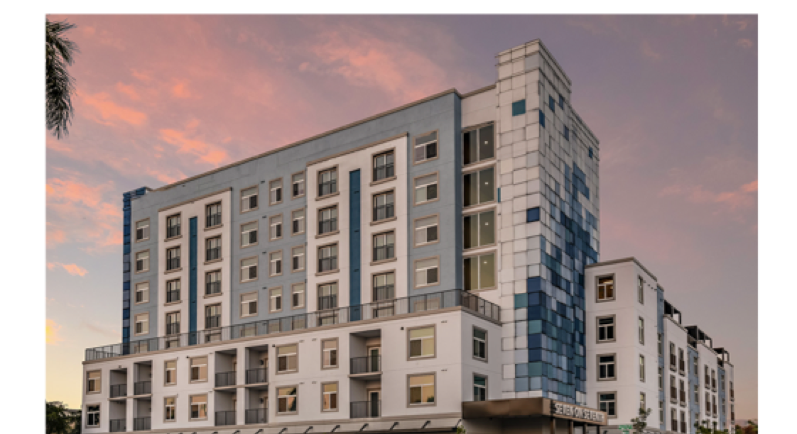
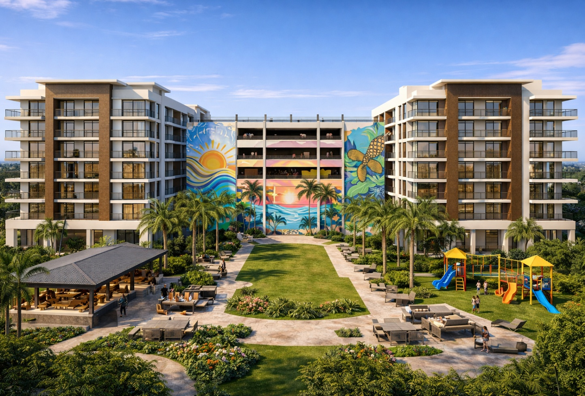
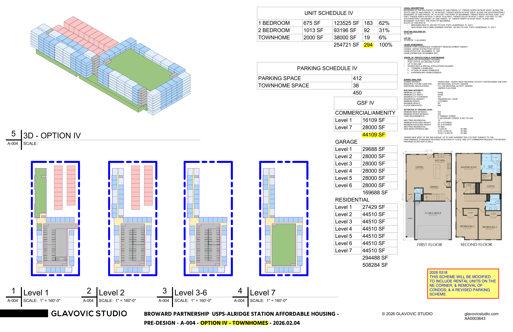

Broward County
Affordable Housing
Initiative
A public-private framework for workforce and affordable housing development. Layered capital stack. Tax-advantaged returns. Permanent affordability through Community Land Trust structure.
March 2026
Broward County, Florida
For Discussion Purposes Only
commongroundhousingtrust.org
This document is prepared for discussion and partner outreach purposes only. All financial projections, tax benefit estimates, and program parameters are preliminary and subject to legal, financial, and feasibility review. This is not a securities offering or investment solicitation. Data sourced from public records: Broward County Property Appraiser, City of Fort Lauderdale CRA, FHFC, HUD, and IRS.
Draft
Contents
- Foundation
- 01Executive Summary
- 02The Origin — The Huizenga Legacy
- 03The Housing Crisis — Broward by the Numbers
- The Framework
- 04Capital Stack — The Five Layers
- 05Investor Value Proposition — Tax Tools
- 06Community Land Trust Model
- 07Target Geography — 18 OZ Tracts
- 08Government Partnership Strategy
- 09The Banking Layer — Circle of Life
- Proof & Pipeline
- 10Proof of Concept — Seven on Seventh & Aspire 1650
- 11Deal Model I — Aspire 1650 (90 Units, FHFC-Filed)
- 12Deal Model II — Heritage Crossing (~300 Units)
- 13Investor Return Summary
- Market Context
- 14Landscape Analysis — 11 Organizations Compared
- 15What Makes This Different
- 16Pipeline & Market Context
- Appendix
- 17Open Questions & Next Steps
- 18Target Banking Partners
01 — Executive Summary
The Wealth Is in the Land
Broward County faces one of the most acute housing affordability crises in the United States. A convergence of expiring CRA districts, incoming Opportunity Zone 2.0 designations, and $85M+ in redirected TIF funding creates a rare window for a transformative public-private housing program.
93%
Cannot Afford Median Home
62%
Renter Households Cost-Burdened
+67%
Median Home Price Since 2020
$2,500
Average Monthly Market Rent
The Gap
An affordable rent threshold for low-to-moderate income households is $919 per month — a gap of $1,584 every month against market rates. This is not just a social issue. It is an economic competitiveness crisis. The Greater Fort Lauderdale Chamber of Commerce has noted that Broward is engaged in "an all-out war for talent" that it risks losing if workforce housing is not addressed.
This document proposes a multi-layered housing development framework that enables ultra-high-net-worth family offices to invest in affordable housing as a long-term generational asset, pairs private capital with federal, state, county, and city tax incentives, uses a Community Land Trust model to permanently preserve affordability, and is modeled on the proven success of BPHI's completed developments in this market.
02 — The Origin
The Huizenga Legacy
In the early 1990s, Fort Lauderdale's downtown had a problem the city couldn't solve by force. A tent city — at its peak, 400 people crammed under tarps in a half-acre parking lot across from City Hall — had become a fixture of the financial district.
The city had tried bum sweeps, garbage can bans, and forced clearing. None of it worked. At a time when over 5,000 individuals were homeless in Broward County and fewer than 350 shelter beds existed, H. Wayne Huizenga — the only person in American history to build three Fortune 500 companies — challenged the financial district's business leaders to invest in a real solution. Not a study. Not a committee. A building.
H. Wayne Huizenga (1937–2018)
Founded Waste Management, Blockbuster Video, and AutoNation. First person to own teams in three major professional sports leagues simultaneously (Dolphins, Marlins, Panthers). 1997 World Series champion. Man of the Centennial, Fort Lauderdale (2010). Wayne and wife Marti donated over $100 million to South Florida institutions. The Huizenga Family Foundation (est. 1987) continues to fund community organizations across Broward County.
Huizenga Campus — By the Numbers
| Facility | 57,000 SF on 3 acres |
| Emergency beds | 498 |
| Individuals & families served | 32,000+ |
| Meals served annually | 1.2 million |
| Permanent housing units | 83 (scattered-site) |
| People served nightly | ~750 |
Timeline
1993Tent City & The County Plan
Broward County Commissioners adopt the Homeless Initiative Plan. Over 5,000 homeless, fewer than 350 beds.
1997BPHI Incorporated
Broward Partnership for the Homeless formed as a private/public alliance. Huizenga's challenge becomes an organization.
1999Doors Open
February 1: Huizenga Campus receives first clients. February 12: Tent city closes. Frances Esposito leads operations for 25 years.
2023Seven on Seventh
BPHI completes first affordable housing development — 72 units of mixed-use housing. From shelter operator to housing developer.
2026The Next Chapter
Aspire 1650 (90 units) in FHFC pipeline. Heritage Crossing (~300 units) in active negotiation. A capital framework for generational investment.
Why Legacy Matters
Wayne Huizenga didn't just write a check. He challenged an industry to invest in a solution alongside government. This framework extends that legacy to UHNW family offices: not charity, but architecture. You don't get wealthy without real estate — and this is real estate that compounds. Land that appreciates on your family's balance sheet for generations. In the current economic climate, with markets volatile and paper assets uncertain, permanently appreciating land is the smartest play available. A namesake that does good in perpetuity.
Sources: Sun-Sentinel (2014, 2018, 2024), BPHI.org, Leo Goodwin Foundation, Broward County Commission records (December 1993), CNBC, ESPN, Nova Southeastern University, Automotive Hall of Fame.
03 — The Housing Crisis
Broward by the Numbers
The scale of Broward's housing gap demands immediate, coordinated action across every level of government and the private sector.
| Metric | Data Point | Implication |
|---|
| Median home price increase since 2020 | +67% | Homeownership out of reach for most |
| Average market rent | $2,500/mo | Far exceeds workforce budgets |
| Affordable rent threshold (LMI) | $919/mo | $1,584/month gap per household |
| Cost-burdened renter households | ~62% | Majority spending 30%+ on rent |
| Residents who cannot afford median home | 93% | Near-universal workforce housing need |
| Tourism / hospitality workforce | Significant | Sector most impacted by housing gap |
04 — The Program Framework
The Capital Stack — Five Layers
An integrated capital stack where multiple funding sources layer on top of each other, maximizing both the scale of housing produced and the financial return for private investors.
| Layer | Source | Role |
|---|
| 1 — Private Capital | UHNW Family Offices / QOF Investors | Acquire land; hold as long-term generational asset |
| 2 — Federal Incentives | LIHTC, OZ/QOF, NMTC, HUD, HOME | Tax credits & grants offset development cost |
| 3 — State Programs | SAIL, SHIP (Florida) | Subordinate loans & gap financing |
| 4 — County / City | TIF Trust Fund, Impact Fee Waivers, Land | Public land + $85M+ in redirected CRA funds |
| 5 — CLT Structure | Community Land Trust Entity | Land held permanently; units sold/rented separately |
05 — Investor Value Proposition
Tax-Advantaged Generational Asset
For ultra-high-net-worth investors and family offices, this program is structured as a long-term tax-advantaged asset — not a short-term yield play.
| Tax Tool | Benefit | Horizon |
|---|
| Qualified Opportunity Fund (QOF) | Defer & eliminate capital gains tax on appreciation | 10+ years |
| Low-Income Housing Tax Credit (LIHTC) | Dollar-for-dollar federal tax credit over 10 years | 10 years |
| New Markets Tax Credit (NMTC) | 39% credit on qualified equity investment | 7 years |
| 1031 Exchange into Fund | Roll property sale proceeds, defer capital gains | Ongoing |
| Family Limited Partnership (FLP) | Generational asset transfer with valuation discounts | Multi-gen |
| Charitable Lead/Remainder Trust | Deduction now; asset passes to heirs later | Estate |
Key Insight
There is rich and there is wealthy. Income makes you rich. Land makes you wealthy. The land itself — held by the family office entity or CLT — appreciates over time as a balance sheet asset, independent of the affordable housing restriction on the units. You don't get wealthy without real estate. This program puts permanently appreciating land on your family's balance sheet while housing the workforce that makes your community function.
06 — Ownership Model
Community Land Trust
Land Ownership — Investor / CLT
The CLT or family office-controlled entity owns the land in perpetuity. The land never re-enters the speculative market. The family office retains a long-term appreciating land asset on the family balance sheet. A third-party property management company maintains all units.
Unit Ownership — Residents
Residents own their individual units (condominiums or homes). When a unit is sold, appreciation is shared between seller and CLT — keeping the unit affordable for the next buyer while giving residents meaningful equity.
07 — Target Geography
18 Opportunity Zone Tracts in Broward
| Municipality | OZ Tracts | CRA / Strategic Status |
|---|
| Fort Lauderdale | 7 | Active CRA (NW-Progresso-Flagler + Central City) — highest OZ density |
| Lauderdale Lakes | 4 | High OZ density; workforce/LMI population; phasing CRA |
| Hallandale Beach | 2 | Active CRA; Miami border growth corridor |
| Hollywood | 1 | Active Beach + Downtown CRA; tourism/hospitality hub |
| Lauderhill | 2 | Affordable land availability; strong community need |
| Dania Beach | 1 | Airport corridor; strong workforce housing demand |
OZ 2.0 — Critical Timing
The current OZ 1.0 program expires at end of 2028. A new OZ 2.0 designation round opens July 1, 2026, with new tracts taking effect January 1, 2027. Partners already engaged with Broward County officials can advocate for OZ 2.0 nomination of target parcels. Florida has 1,360 census tracts eligible for OZ 2.0.
08 — Government Partnership Strategy
Four Tiers of Public Capital
Federal
LIHTC (dollar-for-dollar credit, 10 years), QOF/OZ (capital gains deferral), NMTC (mixed-use), HUD HOME (gap financing), CDBG (infrastructure).
State of Florida
SAIL (subordinate loans for multifamily), SHIP (homeownership/rental assistance), FHFC (administers LIHTC statewide).
Broward County
Affordable Housing Trust Fund ($85M+ from expiring CRA TIF through FY2032). $127.4M total CRA incentives awarded; 80% of in-progress allocation ($45.9M) directed to mixed-use affordable housing. Impact fee waivers, density bonuses (1:25 ratio at 30% AMI), parking reduced to zero for units at/below 60% AMI near transit.
Municipal (City-by-City)
Surplus land under FL Statute 166.0451, zoning density bonuses, expedited permitting, direct land transfer or ground lease.
09 — The Banking Layer
The Circle of Life — Perpetual Reinvestment
Private banking relationships become the engine that makes the entire capital stack self-sustaining — not a one-time transaction, but a perpetual reinvestment cycle.
Leverage Private Banking Relationship
UHNW family office engages existing relationship with JPMorgan, Goldman, Citi, Wells, or BofA Private Bank.
Bank Provides Acquisition + Construction Loan
Secured against CLT land asset. Low LTV risk. CRA-motivated, below-market rate.
LIHTC Equity Bridge Loan
Bank advances credit investor equity before final pay-in, filling the construction gap.
Federal + State Incentives Layered In
LIHTC, OZ, HOME, SAIL reduce effective cost of capital to near zero.
Development Completes — Income Begins
Units rented or sold. Rental income and condo proceeds service debt.
Permanent HUD 221(d)(4) Replaces Construction Debt
Non-recourse, 40-year FHA-insured mortgage locks in low fixed rate.
Land Asset Appreciates
CLT land grows in value independent of unit affordability restrictions.
Family Office Refinances — Pulls Equity
Cash-out refi at higher valuation frees capital for redeployment.
Equity Redeployed into Next Deal
New OZ tract, new parcel, new development. The cycle restarts permanently.
CRA Mandate
Under the Community Reinvestment Act, every major bank is graded on how well it deploys capital in LMI communities. A poor grade can block mergers, acquisitions, and expansion. Banks need your deal as much as you need their capital. CRA-motivated loans come at below-market rates.
10 — Proof of Concept
Execution Track Record

Seven on Seventh — Completed 2023 — bphi.org
Seven on Seventh — 77 Units (Completed)
Mixed-use affordable housing in the NW-Progresso CRA. 95%+ stabilized occupancy. Construction loan repaid. CRA partnership executed. Workforce training hub operational.

Aspire 1650 — GHA — Schematic Design May 2025
Aspire 1650 — 90 Units (In Pipeline)
Pompano Beach. FHFC RFA 2025-103 approved March 2025. GC bids due April 3, 2026. Construction Q3 2026–Q4 2027. Phase 1 of 160 total.
11 — Deal Model I
Aspire 1650 — 90 Units, Pompano Beach
A real development with approved FHFC financing, an active invitation to bid (due April 3, 2026), and construction targeted for Q3 2026. This is not hypothetical — it is the next project in the pipeline. All figures from the filed FHFC RFA 2025-103 application.
Project Overview
| Location | NW 31st Ave & Blount Rd, Pompano Beach, FL |
| Units | 90 (Phase 1 of 160 total) |
| Unit Mix | 19 Studio · 61 1BR/1BA · 10 2BR/2BA |
| Building | 8-story high-rise, single building |
| GSF | 83,712 SF |
| Parking | 160 surface spaces |
| Construction Type | High-rise, new construction |
| Architect | Gallo Herbert Architects (GHA) |
| Development Partner | Green Mills Group |
| FHFC Application | RFA 2025-103 (#2025-362CSA) |
Timeline
| FHFC Application Filed | January 21, 2025 |
| FHFC Board Approval | March 28, 2025 |
| GC Bids Due | April 3, 2026 |
| Financial Closing / Groundbreaking | Q3 2026 |
| 50% Construction | Q2 2027 |
| Certificate of Occupancy | Q4 2027 |
| 100% Leased | Q1 2028 |
| Stabilized Operations | Q3 2028 |
Development Budget — FHFC Application
| Line Item | Cost | % of TDC | Per Unit |
|---|
| Land (TBD) | $2,500,000 | 6% | $27,778 |
| Hard Cost Construction | $23,857,920 | 60% | $265,088 |
| Rec / Owner / Green / FF&E | $483,900 | 1% | $5,377 |
| Hard Cost Contingency | $1,192,896 | 3% | $13,254 |
| Developer Fee | $4,929,064 | 12% | $54,767 |
| Construction Interest | $1,494,000 | 4% | $16,600 |
| Financing Fees / FHFC Fees | $850,447 | 2% | $9,449 |
| Operating Reserve (5% TDC) | $1,549,333 | 4% | $17,215 |
| Soft Costs | $3,107,490 | 8% | $34,528 |
| Total Project Costs | $39,965,050 | 100% | $444,056 |
Capital Stack — Sources
LIHTC Equity $28.0M · 70%
SAIL $5.6M · 14%
Deferred Dev Fee 5%
Land 4%
Other 7%
| Source | Amount | % of TDC | Notes |
|---|
| LIHTC Limited Partner Equity | $28,047,195 | 70% | 9% housing credits; largest single source |
| FHFC SAIL | $5,570,900 | 14% | State Apartment Incentive Loan |
| Deferred Developer Fee | $2,017,855 | 5% | Developer fee deferred to close gap |
| Deferred Land | $1,500,000 | 4% | Land value contributed / deferred |
| NTHF / HOME | $1,150,000 | 3% | National Housing Trust Fund / HOME program |
| BPHI Reloan (McCormick) | $850,000 | 2% | Internal BPHI subordinate loan |
| FHFC ELI | $529,100 | 1% | Extremely Low Income supplemental |
| Broward County | $300,000 | 1% | County contribution |
| Total Project Financing | $39,965,050 | 100% | |
Construction Financing
| Construction Loan | $18,000,000 |
| LIHTC Equity During Construction | $14,023,598 |
Key Metrics
| Cost Per Unit | $444,056 |
| Cost Per Net SF | $764 |
| LIHTC as % of TDC | 70% |
| GC Bids Outstanding | 4 (due 4/2/26) |
Note
The pro forma will be revisited once final construction bids are received (due April 3, 2026) and equity investor commitments are secured. Numbers above reflect the filed FHFC application. Broward County has agreed to construct off-site drainage improvements and site elevation work on the adjacent county-owned parcel at county expense.
Source: FHFC RFA 2025-103 Application (#2025-362CSA), filed January 21, 2025. Pro forma page 1 from BPHI/Green Mills Group submission. Unit mix updated per March 9, 2026 Fact Sheet (8 studio, 68 1BR, 14 2BR). Construction timeline per March 2026 update. GC bids solicited February 26, 2026 to Gomez Construction, Lemark Construction, Pirtle, and Royal American Management.
12 — Deal Model II
Heritage Crossing — ~300 Units at 400 NW 7th Avenue
A ~300-unit mixed-use affordable housing community on the 3.03-acre USPS Post Office site. Two eight-story buildings around a central courtyard. Contemporary South Florida design with public art mural. AMI levels 30–80%. Term sheet in negotiation.

Heritage Crossing — Conceptual Design — Two 8-story buildings, central courtyard, summer kitchen, playground, public art mural — March 2026
Building Configuration
Two identical 8-story structures, 150 units each. Podium-style wrapped garage (6 levels, 332 spaces). Ground level: residential liner units, lobby, amenities, commercial/nonprofit space.
Central Courtyard
Summer kitchen with built-in grills. Children’s playground with shade canopy. Event lawn. Native tropical landscaping with rainwater bioswales. Contemporary South Florida palette: white + earth tones, wood accents, glass balcony railings.

Glavovic Studio — Schedule I (Central Garage) — 320 units, 332 parking, 500,448 GSF — Pre-Design Feb/March 2026

Glavovic Studio — Schedule IV (Townhomes) — 294 units (incl. 19 townhomes), 450 parking, 508,284 GSF
Conceptual narrative based on Schedule I with design elements from Seven on Seventh and Aspire 1650. Developer partner will determine final scheme and phasing.
Site Details
| Parameter | Detail | Source |
|---|
| Address | 400 NW 7th Ave, Fort Lauderdale 33311 | CRA Public Record |
| Size | 3.02 acres / 131,679 SF | CRA Board, Feb 2026 |
| Owner | City of Fort Lauderdale (CDBG-acquired) | BCPA Folio 504203230010 |
| Transfer Path | City → CRA → Broward Partnership | CRA Public Record |
| Fair Market Value | $10M+ ($75–$100/SF) | CRA Housing Mgr, Feb 2026 |
| Acquisition Cost | $0 (CRA conveyance) | CRA disposition authority |
| Zoning | NWRAC-MUE — Unlimited DU/acre | City zoning records |
| USPS Lease Expiration | December 11, 2027 | 30-year lease; USPS confirmed not extending |
| Height | 65 ft by right; 110 ft with AH bonus | CRA memo, Feb 2026; FAA limit 200 ft |
| LLA Tax Exemption | 100% for <80% AMI; 75% for 80–120% | Live Local Act (FL SB 102, 2023) |
| CRA Extension | Through November 7, 2035 | ILA signed May 20, 2025 |
Proposed Terms (Per CRA Public Discussion, February 2026)
Minimum 250 multifamily units. At least 50% at or below 60% AMI. May be phased. 10-year reverter for building permits. Developer may transfer to affiliated entity or JV.
Development Budget
| Line Item | Cost | Per Unit |
|---|
| Land Acquisition | $0 | $0 |
| Hard Costs | $72,000,000 | $225,000 |
| Soft Costs | $10,800,000 | $33,750 |
| Developer Fee | $7,200,000 | $22,500 |
| Financing Costs | $5,400,000 | $16,875 |
| Reserves | $1,600,000 | $5,000 |
| Total Development Cost | $97,000,000 | $303,125 |
Capital Stack
LIHTC $40.7M · 42%
QOF $20.4M · 21%
FHA $20.4M · 21%
State 8%
CRA 8%
Stabilized Pro Forma — Year 1
| Line Item | Annual | Notes |
|---|
| Effective Gross Income | $5,252,544 | 60% AMI rents, 7% vacancy, $360K commercial |
| Operating Expenses | ($2,080,000) | $6,500/unit |
| Net Operating Income | $3,172,544 | |
| Debt Service | ($1,365,360) | $20.4M FHA 221(d)(4) at 5.25%, 40-yr |
| Cash Flow After Debt | $1,807,184 | DSCR: 2.32x |
13 — Investor Return Summary
Three Return Streams, One Compounding Asset
14–18%
Blended After-Tax IRR
$10M+
Day-One Land Equity
Stream 1: LIHTC Tax Credits
~$80M face value over 10 years. Investor cost at $0.92/credit. Effective annual yield ~8.6% tax-equivalent.
Stream 2: QOF / Opportunity Zone
$20.4M invested. Capital gains deferred years 1–10, then tax-free on appreciation. 6% preferred return = $1.2M/year.
Stream 3: Cash Flow + Land Appreciation
$1.8M annual cash flow. Land basis of $10M+ projected to $14–$16M at Year 10. Generational transfer via FLP at discounted valuation.
Sensitivity
| Scenario | CoC | IRR |
|---|
| Base Case | 8.9% | 14–18% |
| 15% Cost Overrun | 7.1% | 10–12% |
| 10% Rent Reduction | 6.9% | 10–11% |
14 — Landscape Analysis
Broward Has the Organizations. It Doesn't Have the Units.
8,690
Miami-Dade Same Period
770 yrs
To Close Gap at Pace
Government Programs — Fund, Don't Build
| Organization | Role | Scale |
|---|
| County Housing Division | Gap financing, trust fund | $154M since 2018 — 4,301 units funded |
| Housing Trust Fund | Dedicated funding (2018 referendum) | $42M approved — 1,545 units |
| Housing Finance Authority | Tax-exempt bonds | $146M — 552 units |
Nonprofit Developers — Build Small
| Organization | Scale | Assessment |
|---|
| Broward Housing Solutions | 197 units, 19 properties | Important niche (disabled/mental health). Not workforce scale. |
| Habitat for Humanity | 300+ homes since 1983 | ~10 homes/year. Homeownership only. |
| South Florida CLT | 13 units in Broward | Right model, minimal scale. |
| BPHI (This Framework) | 77 done → 90 pipeline → 320 negotiation | Fastest trajectory. Only CLT + UHNW stack. |
Sources: Broward County records, Sun-Sentinel (2024–2026), WLRN, The Real Deal, FHFC, Shimberg Center, organization websites.
15 — Differentiation
What Makes This Different
| Factor | Most Broward Programs | This Framework |
|---|
| Affordability | Time-limited (15–30 yr covenants) | CLT = permanent. Land never returns to market. |
| Capital Source | Government grants, bonds | UHNW private capital + government incentives |
| Investor Return | None — grant-funded | 14–18% after-tax IRR. Tax shelter. |
| Banking | Developer finds own financing | CRA mandate as institutional incentive |
| Scale | 10–50 units/year (nonprofit typical) | 77 → 90 → 320 across three projects |
| Land | Market-rate or waiting for surplus | $0 CRA conveyance ($10M+ value) |
| CLT Scale | SF CLT: 13 units in Broward | CLT at 25x with institutional backing |
| Proof | Plans, studies, workshops | Completed project. Loan repaid. Next two in pipeline. |
The Opportunity
Broward County has $154M in deployed gap financing, a $42M trust fund, $146M in bond authority, and a 30-year master plan. What it does not have is a developer with a completed project, an active pipeline, a negotiated site, an engaged architect, and a capital structure that attracts private investment at scale. That is the gap this framework fills.
16 — Pipeline & Market Context
Major Projects 2025–2028
| Project | Developer | Units | Type | Status |
|---|
| Rainbow Village (Miami) | Housing Trust Group | 310 | Affordable (30–80% AMI) — $185M TDC | Under construction — 2027 |
| The Era | Affiliated Development | 400 | Workforce (80–120% AMI) | Under construction |
| Pinnacle at Cypress | Pinnacle Housing Group | 196 | Senior + workforce | Groundbreaking Q1 2026 |
| County gap-financed (8 sites) | Various | 516 | Affordable rental | Proposed May 2025 |
| Aspire 1650 | BPHI | 90 | Affordable — homeless (RFA 2025-103) | FHFC pipeline |
| Heritage Crossing | BPHI | 320 | Affordable — 50%+ at 60% AMI (CLT + QOF) | Term sheet in negotiation |
17 — Open Questions & Next Steps
Talking Points for Development
Structure & Legal
Can a QOF and CLT be the same entity, or separate with ground lease? Limitations on returns in LIHTC + QOF combined structure? CLT covenant vs. Florida condo law? Single-asset vs. multi-asset fund?
Government / Partnership
Which CRAs expiring soonest with surplus parcels? County willingness for $1/year ground lease to CLT? Preference for 30-year LIHTC or permanent CLT covenant? Land disposition timeline?
Investor Proposition
Realistic 10-year IRR for QOF-backed CLT in Broward? FLP structure for estate planning + QOF? Minimum threshold for meaningful UHNW tax benefits? LIHTC syndicator selection strategy?
Immediate Actions
1. Pull BCPA Web Map (OZ + CRA overlay). 2. Contact Broward Housing Finance Division. 3. Request surplus land inventory (FL 166.0451). 4. Engage tax attorney (QOF + CLT). 5. Monitor OZ 2.0 (opens July 1, 2026). 6. Model financial scenarios.
18 — Target Banking Partners
South Florida Capital Partners
| Institution | Why Relevant | Entry Point |
|---|
| JPMorgan Private Bank | Largest private bank; aggressive CRA; active LIHTC syndicator | Explore Existing Relationship |
| Bank of America / Merrill | Major LIHTC investor/syndicator; strong CRA in South FL | BofA Community Development |
| Wells Fargo Private Bank | Significant CRA lending in Broward; affordable housing focus | Wells Fargo Housing Finance |
| Citi Private Bank | Global UHNW relationships; active in OZ and LIHTC | Citi Community Capital |
| TD Bank | Strong CRA in SE Florida; active construction lender | TD Community Dev Finance |
| Florida Community Loan Fund | CDFI — fills gaps; stacks with bank debt | Direct application |
This document is prepared for discussion and partner outreach purposes only and does not represent the official position of any organization. All projections are preliminary and subject to legal, financial, and feasibility review. This is not legal or financial advice, and not a securities offering or investment solicitation. Data sourced from Broward County Property Appraiser, City of Fort Lauderdale CRA public records, Florida Housing Finance Corporation, HUD, IRS, Sun-Sentinel, WLRN, and publicly available government filings.
Broward County Affordable Housing Initiative — Draft — March 2026 — Confidential